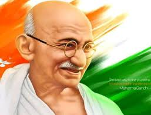

Freedom Fighter

Timeline of Mahatma Gandhi's Life
- 1869 - Born on Oct. 2 at Porbandar, Kathiawad, son of Karamchand (Kaba) and Putlibai Gandhi.
- 1882 - Marriage with Kasturbai
- 1894 - Founded the 'Natal Indian Congress'.
- 1906 - Took the vow of Brahmcharya
- 1908 - The term 'Satyagraha' adopted based on Maganlal Gandhi's fomulation 'Sadagraha'.
- 1915 - Established 'Satyagraha Ashram', Kochrab
- 1947 - Addressed the Asian Relations Conference.
- 1948 - Took three bullets on his chest. Godse the assassin and cremated on the banks of the Yamuna by Ramdas.